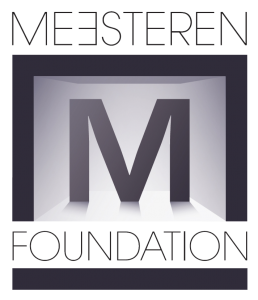

Mijn eerste opleiding was in de horeca maar helaas door een vergroeing in mijn rug heb ik die moeten beeindigen. Ben begonnen in de ICT met medewerker servicedesk niv. 2 te Zadkine Rotterdam. Vervolgens ben ik meteen verder gegaan met medewerker beheer niv.3 En nu doe ik applicatie ontwikkeling niv. 4. Bij mijn eerste opleiding heb ik 600 uur stage gelopen bij een reparatie kantoor voor laptops en smartphones. Hierbij heb ik vooral geleerd om met klanten om te gaan, eerste en 2e lijns helpdesk. Bij mijn 2e opleiding heb ik 800 uur stage gelopen bij: "the meesteren foundation" die zich bezighouden met financeel daklozen Na deze stage heb ik nog 1 jaar vrijwillegers werk hier gedaan. Bij dit bedrijf en deze opleiding heb ik heel veel geleerd Vooral over mijn kennis in hardware, en mijn contacten en onderhoud van contacten met klanten.
